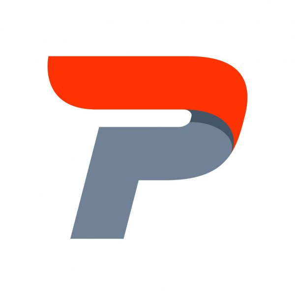

prpriyalakshmi03@gmail.com
6381996995
Madurai-South Taluk

| DATE OF BIRTH |
26.03.2003 |
ADDRESS |
Avaniapuram, Madurai |
| EDUCATION | B.Tech Information Technology Velammal College of Engineering and Technology 2020-2024 CGPA:8.49/10 Senior Secondary(XII),Science St.Joesph.Girls.Hr.Sec.School (STATE BOARD EDUCATION BOARD board) Year of completion: 2020 Secondary (X) EVRN.Girls.Hr.Sec.School (STATE BOARD EDUCATION BOARD board) Year of completion: 2018 |
| INTERNSHIPS | Technical Content Writing Latracal Solutions Private Limited, Virtual Jul 2021-Sep 2021 Latracal-Priyalakshmi Technical Content Writing GUVI GEEKS NETWORK PVT LTD, Virtual May 2021-Jun 2021 Guvi-Priyalakshmi |
| PROJECTS | End to end encryption using python Jun 2021 - Jun 2021 Refer Project Nowadays end to end encryption is very important. I thought why don't we create a python project on this . So I made this awesome project. Covid 19 tracker application in Python Apr 2021-May 2021 Refer Project I developed a coding for covid 19 tracker application in Python. If you enter the country it will show the active cases ,recovered cases and death cases in that country. |
| SKILLS | |
| LANGUAGES KNOWN | |
| CONTACTS | Priyalakshmi-LinkedIn Priyalakshmi-Blog |